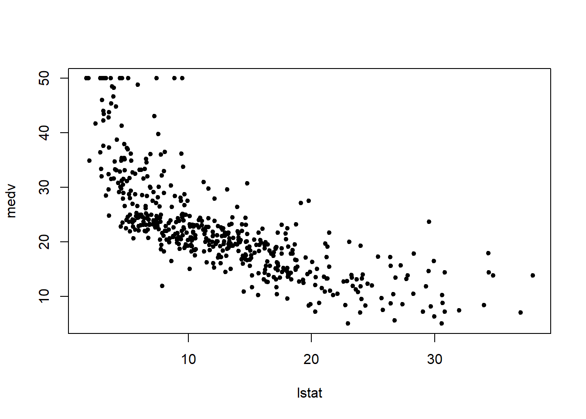
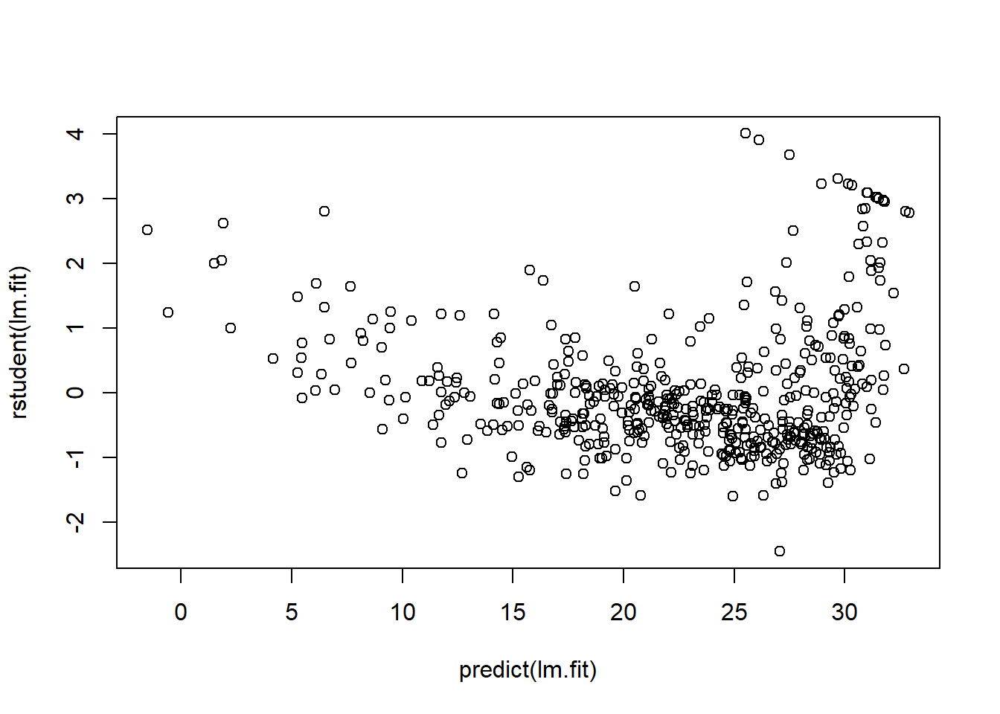
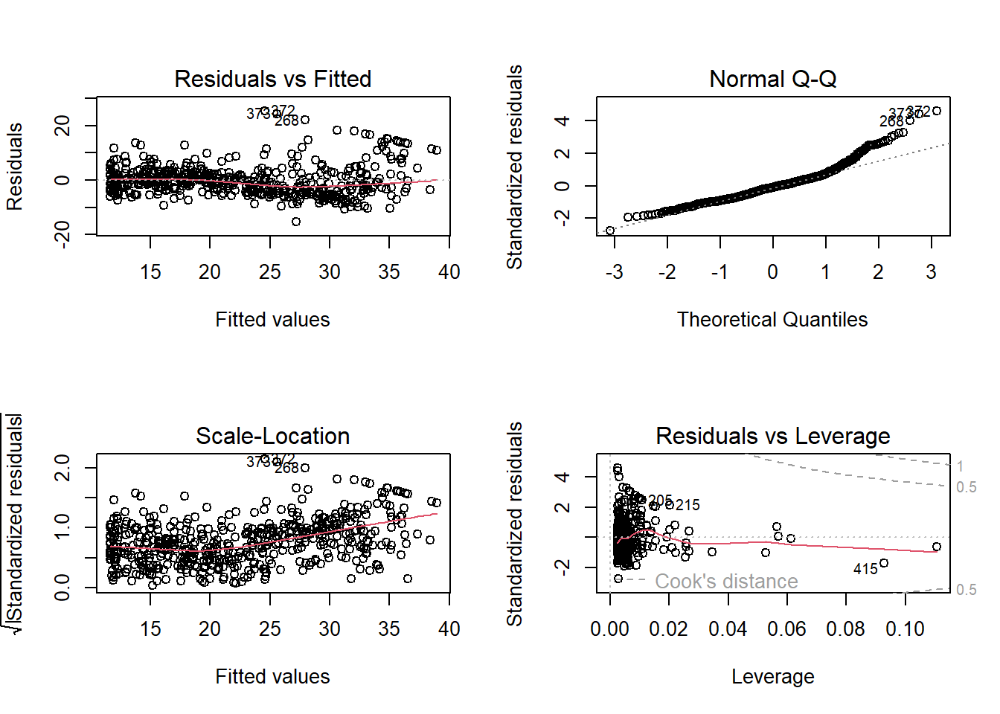

library (MASS)Informe de regresión lineal simple y múltiple: Resumen, Laboratorio Capítulos 2 y 3 ( An Introduction to Statistical Learning)
Capítulo 2: Aprendizaje Estadístico
El aprendizaje estadístico se refiere a un conjunto de enfoques para estimar f.
Un ejemplo de un estudio de aprendizaje estadístico que investiga la correlación entre la publicidad y las ventas de productos en diferentes mercados.
Los datos de publicidad y ventas se tabulan y se busca un modelo preciso para pronosticar las ventas en función de los presupuestos de publicidad en televisión, radio y periódicos.
El presupuesto de publicidad es la variable de entrada (o independiente) etiquetada como X1, X2 y X3, mientras que las ventas son la variable de salida (o dependiente) etiquetada como Y.
Los términos “predictor”, “variable independiente”, “función” o simplemente “variable”. ” se usan indistintamente para referirse a la variable de entrada, mientras que la variable de salida también se puede llamar “respuesta” o “variable dependiente”.
¿Por qué estimar f?
Hay dos razones principales por las que podemos querer estimar f:
Predicción
Inferencia
Predicción
En muchas situaciones, se dispone fácilmente de un conjunto de entradas X, pero la salida Y no puede obtenerse fácilmente.
En este caso, Dado que el término de error tiene un valor medio a cero, podemos predecir Y utilizando
Yˆ = ˆf(X),
Donde ˆf representa nuestra estimación para f
Yˆ representa la predicción resultante para Y .
En este entorno, ˆf suele tratarse como una caja negra, en el sentido de que en el sentido de que a uno no le suele preocupar la forma exacta de ˆf, siempre y cuando produzca predicciones precisas para Y.
Interferencia
En este contexto, se puede predecir Y utilizando una estimación para f, y Y representa la predicción resultante para Y.
Si el objetivo es entender la asociación entre Y y X1,...,Xp, se debe estimar f, pero no necesariamente para hacer predicciones para Y. En este caso, no se puede tratar ˆf como una caja negra, ya que se necesita conocer su forma exacta.
Algunas preguntas que pueden surgir son:
- ¿Qué predictores se asocian a la respuesta?
A menudo que sólo una pequeña fracción de los predictores disponibles están con Y
- ¿Cuál es la relación entre la respuesta y cada predictor?
Algunos predictores pueden tener una relación positiva con Y.
La relación entre la respuesta y un predictor.
También puede depender de los valores de los demás predictores.
- ¿Puede resumirse adecuadamente la relación entre Y y cada predictor utilizando una ecuación lineal, o es la relación más complicada?
Históricamente, la mayoría de los métodos para estimar f han adoptado una forma lineal.
En algunos casos, se pueden modelar la predicción y la inferencia.
Dependiendo del objetivo final de nuestro análisis, pueden ser apropiados diferentes métodos para estimar f.
- Por ejemplo, los modelos lineales permiten inferencias relativamente simples e interpretables, pero es posible que no proporcionen predicciones tan precisas como algunos métodos no lineales.
¿Cómo estimamos f?
Siempre supondremos que hemos observado un conjunto de n puntos de datos diferentes puntos de datos. Por ejemplo, en la Figura 1 observamos n = 30 puntos de datos.
Estas observaciones se denominan datos de entrenamiento, ya se usarán para:
- Entrenar o enseñar.
Para entrenar, o enseñar, a nuestro método a estimar f.
- yi representa la variable de respuesta de la i-ésima observación.
Los datos de entrenamiento son:
- {(x1, y1),(x2, y2),...,(xn, yn)} donde xi = (xi1, xi2,...,xip)T .
Nuestro objetivo es aplicar un método de aprendizaje estadístico a los datos de entrenamiento
para estimar la función desconocida f.
- Es decir encontrar una función ˆf tal que Y ≈ ˆf(X) para cualquier observación (X, Y ). En términos generales
Métodos paramétricos
Los métodos paramétricos implican un enfoque basado en modelos de dos pasos.
La forma funcional
Por ejemplo, una suposición muy sencilla es que f es lineal en X:
f(X) = β0 + β1X1 + β2X2 + --- + βpXp
Después de seleccionar un modelo, se necesita un procedimiento que use los datos de entrenamiento para ajustar o entrenar el modelo. En el caso del modelo lineal, necesitamos estimar los parámetros β0, β1,..., βp para encontrar los valores que ajusten los datos.
Es decir, queremos encontrar valores de estos parámetros tales que
Y ≈ β0 + β1X1 + β2X2 + --- + βpXp.
El enfoque más común para ajustar el modelo lineal es el método de mínimos cuadrados ordinarios.
Métodos no paramétricos
Los métodos no paramétricos no hacen suposiciones explícitas sobre la forma funcional de f.
En su lugar, buscan una estimación de f que se acerque lo más posible a los puntos de datos sin que sea demasiado aproximada u ondulada.
Los puntos de datos sin ser demasiado aproximados o imprecisos.
Los enfoques no paramétricos no se hace ninguna suposición sobre la forma de f. Sin embargo, los enfoques no paramétricos tienen una gran desventaja.
Desventaja: dado que no reducen el problema de estimar f a un numero de parámetros, se necesita un gran número de observaciones (muchas más de las que se suelen necesitar para un método paramétrico).
En la Figura 2 se muestra un ejemplo de ajuste no paramétrico de los datos de ingresos.

El equilibrio entre la precisión de la predicción y la interpretabilidad del modelo
La regresión lineal es un enfoque relativamente inflexible, porque sólo puede generar funciones lineales.
Otros métodos, como los splines de placa delgada: Son considerablemente más flexibles porque pueden generar una gama de formas posibles para estimar f.
¿Por qué utilizar un método más restrictivo en lugar de un enfoque más flexible?
Hay varias razones por las que podríamos preferir un modelo más restrictivo.
Si nos interesa principalmente la inferencia, los modelos restrictivos son mucho más interpretables.
- Por ejemplo, cuando el objetivo es la inferencia, el modelo lineal lineal puede ser una buena elección, ya que será bastante fácil entender la relación entre Y y X1, X2,...,Xp.
En general, a medida que aumenta la flexibilidad de un método, disminuye su interpretabilidad.

Aprendizaje supervisado frente a aprendizaje no supervisado
La mayoría de los problemas de aprendizaje estadístico pertenecen a una de estas dos categorías: supervisados o no supervisados.
- Para cada observación de predictor(es) xi, i = 1,...,n hay una medida de respuesta asociada yi de respuesta yi.
Objetivo: Ajustar un modelo que relacione la respuesta con los predictores, con el fin de predecir con exactitud la respuesta para futuras de la (predicción) o comprender mejor la relación entre la respuesta y los predictores.
Métodos clásicos de aprendizaje estadístico que operan en el ámbito de la supervisión:
Regresión lineal
La regresión logística
GAM
Boosting
Máquinas de regresión de vec- soporte
- El aprendizaje no supervisado describe la situación algo más difícil en la que para cada observación i = 1,...,n.
Ejemplo: Un vector de medidas xi, pero ninguna respuesta asociada yi. No es posible ajustar un modelo de regresión lineal, ya que no existe una variable de respuesta
En este contexto, en cierto modo trabajamos a ciegas
La situación se denomina no supervisada porque carecemos de una variable de respuesta que pueda supervisar nuestro análisis.
Problemas de regresión frente a problemas de clasificación
En estadística, las variables pueden ser cuantitativas o cualitativas (también conocidas como categóricas). Las variables cuantitativas toman valores numéricos, mientras que las variables cualitativas toman valores de diferentes categorías.
Los problemas con una variable de respuesta cuantitativa se denominan problemas de regresión, mientras que los problemas con una variable de respuesta cualitativa se denominan problemas de clasificación. Sin embargo, la distinción no siempre es clara, ya que en ambos casos se pueden utilizar ciertos métodos, como la regresión logística.
La elección del método de aprendizaje estadístico viene determinada por la variable respuesta (cuantitativa o cualitativa), mientras que el tipo de variable predictora (cualitativa o cuantitativa) se considera secundaria.
Independientemente del tipo de predictor, la mayoría de las técnicas de aprendizaje estadístico se pueden utilizar siempre que los predictores cualitativos estén codificados correctamente antes del análisis.
Evaluación de la precisión de los modelos
Ningún método único es adecuado para todos los conjuntos de datos posibles, por lo que es importante elegir el método apropiado para cada conjunto de datos en particular.
Medir la calidad del ajuste
Para evaluar el rendimiento de un método de aprendizaje estadístico en un conjunto de datos determinado, necesitamos algún modo de medir hasta qué punto sus predicciones:
Se necesita cuantificar hasta qué punto medida en que el valor de respuesta predicho para una observación dada se aproxima el verdadero valor de respuesta para esa observación.
En el ámbito de la regresión, la medida más utilizada es el error cuadrático medio (ECM), dado por:

ˆf(xi) es la predicción que da ˆf para la i-ésima observación. El MSE será pequeño si las respuestas predichas están muy cerca de las respuestas verdaderas.
Será grande si las respuestas pronosticadas y verdaderas para algunas observaciones difieren significativamente.
El error cuadrático medio (MSE) se calcula utilizando los datos de entrenamiento utilizados para ajustar el modelo, por lo que debería llamarse MSE de entrenamiento con mayor precisión. Pero, en general, no nos importa qué tan bien funciona el método en los datos de entrenamiento.
En cambio, estamos interesados en la precisión de las predicciones que obtenemos al aplicar nuestro método a datos de prueba nunca antes vistos. Esto es importante porque nos interesa cómo manejará el método los datos futuros, no cómo manejará los datos pasados que se usaron para entrenar el modelo.
En la práctica, suele ser fácil calcular el MSE de entrenamiento:
Estimar el MSE de prueba es mucho más difícil porque los datos de prueba generalmente no están disponibles.
El nivel de elasticidad correspondiente al modelo con el MSE de prueba más pequeño puede variar significativamente entre los conjuntos de datos.
Un enfoque importante es la validación cruzada, que es un método cruzado que utiliza datos de entrenamiento para estimar el MSE de una prueba.
La relación entre sesgo y varianza
Es posible demostrar que el MSE de prueba esperado, para un valor dado x0, siempre puede descomponerse en la suma de los valores de x0 y x0.
Siempre puede descomponerse en la suma de tres cantidades fundamentales: la varianza de ˆf(x0), el sesgo al cuadrado de ˆf(x0) y la varianza del error error ϵ. Es decir:

La notación E (Y0 - ˆf(x0) define el MSE de prueba esperado en x0, se refiere al MSE de prueba medio que obtendríamos si probáramos repetidamente MSE.
Se estima f utilizando un gran número de conjuntos de entrenamiento.
El término “varianza” se refiere a la cantidad en la que cambiaría la estimación de f si se usara un conjunto de datos de entrenamiento diferente para estimarla.
En general, los métodos estadísticos más flexibles marcan una mayor diferencia.
Si el método tiene una varianza alta, pequeños cambios en los datos de entrenamiento pueden causar grandes cambios en la estimación de ^f.
La mayor flexibilidad de un modelo estadístico afecta su varianza y sesgo y cómo esto afecta las pruebas de MSE.
A medida que aumenta la elasticidad, el sesgo tiende a disminuir más rápido que la varianza, lo que hace que disminuya el MSE de la prueba inicial. Pero después de cierto punto, la varianza aumenta significativamente y el MSE de la prueba comienza a aumentar.
La relación entre el sesgo, la varianza y el MSE del conjunto de prueba que se da en la ecuación y se muestra en la figura 6 se denomina compromiso sesgo-varianza.

La relación entre sesgo y varianza es conocida como compromiso sesgo-varianza.
Para lograr un buen rendimiento del conjunto de prueba de un método de aprendizaje estadístico es necesario encontrar un equilibrio entre una varianza baja y un sesgo al cuadrado bajo. Esto es difícil de lograr ya que es fácil obtener métodos con baja varianza, pero alto sesgo o métodos con bajo sesgo, pero alta varianza.
Encontrar un método con ambos baja varianza y sesgo al cuadrado bajo es un desafío importante en el aprendizaje estadístico.
El entorno de clasificación
Muchos de los conceptos que hemos encontrado, como como el equilibrio entre sesgo y varianza, se transfieren al entorno de clasificación con sólo algunas modificaciones debidas al hecho de que yi ya no es cuantitativo.
Supongamos que queremos estimar f a partir de observaciones de entrenamiento {(x1, y1),...,(xn, yn)}, donde ahora y1,...,yn son cualitativas.
El enfoque más común para cuantificar la precisión de nuestra estimación ˆf es la tasa de error de entrenamiento, la proporción de errores que se cometen si aplicamos la tasa de error nuestra estimación ˆf a las observaciones de entrenamiento:

El clasificador de Bayes
Simplemente hay que asignar una observación de prueba con el vector predictor x0 a la clase j para la que:
Es una probabilidad condicional: probabilidad de que Y = j, dado el vector predictor observado x0.
Este clasificador tan sencillo se denomina clasificador de Bayes. En un problema de dos clases en el que sólo hay dos posibles valores de respuesta, la clase 1 o la clase 2.
K-Nearest Neighbors
Los clasificadores de Bayes son buenos para predecir respuestas cualitativas, pero en realidad no conocemos la distribución condicional de Y dada X, por lo que no se puede calcular. Como tal, es un estándar de oro inalcanzable contra el cual comparar otros métodos.
Uno de estos métodos es el K-vecino más cercano (KNN), que estima la distribución condicional de Y dada X y clasifica las observaciones dadas según la clase con la probabilidad estimada más alta. Dado un entero K y una observación de prueba x0, el clasificador KNN identifica K puntos en los datos de entrenamiento que están más cerca de x0 y estima la probabilidad condicional de la clase j como la fracción N0 de puntos con un valor de respuesta igual A J.
A continuación, estima la probabilidad condicional de la clase j como la fracción de puntos en N0 cuyos valores de respuesta son iguales a j:

El éxito de cualquier método de aprendizaje estadístico depende de elegir el nivel adecuado de flexibilidad tanto en la regresión como en la clasificación.
Esto implica lograr un equilibrio entre el sesgo y la varianza, lo que puede ser difícil debido a la forma de U del error de prueba.
Capítulo 3: Regresión Lineal
La regresión lineal es una herramienta útil para predecir una respuesta cuantitativa
Regresión lineal simple
La regresión lineal simple se enfoca para predecir una respuesta cuantitativa Y en función de una única variable predictora X. Supone que existe una relación aproximadamente lineal entre X e Y y se puede escribir esta relación matemáticamente como a continuación:
- Relación lineal: Y ≈ β0 + β1X
Estimación de los coeficientes
En la práctica, β0 y β1 son desconocidos. Así que antes de poder utilizar Y ≈ β0 + β1X para hacer
predicciones, debemos utilizar datos para estimar los coeficientes. Sea
(x1, y1), (x2, y2),..., (xn, yn)
Representan n pares de observaciones, cada uno de los cuales consiste en una medición de X y una medición de Y.
- Ejemplo: De publicidad, el conjunto de datos consiste en presupuestos de publicidad Televisión y ventas de productos para n=200 mercados diferentes. El objetivo es obtener los coeficientes de la ecuación lineal (3.1) para ajustar bien los datos disponibles. Esto se logra encontrando la intersección y la pendiente que el permitan dibujar una línea lo más cerca posible de los 200 puntos de datos. Para medir esta cercanía se utiliza el criterio de mínimos cuadrados, que se explica en este capítulo.

Evaluación de la precisión de las estimaciones del coeficiente
Si f debe aproximarse mediante una función lineal, podemos escribir esta relación como:
Y = β0 + β1X + ϵ
β0 es el término de intercepción, es decir, el valor esperado de Y cuando X = 0.
β1 es la pendiente, es decir, el aumento medio de Y asociado a un aumento de una unidad en X.
El término de error es un cajón de sastre para lo que no vemos con este método: la verdadera relación probablemente no sea lineal, puede haber otras variables que causen variación en Y , y puede haber error de medición.
Normalmente suponemos que el término de error es independiente de X.
Evaluación de la precisión del modelo
Una vez rechazada la hipótesis nula en favor de la hipótesis alternativa, es natural querer cuantificar en qué medida el modelo se ajusta a los datos.
La calidad del ajuste de una regresión lineal suele evaluarse mediante dos magnitudes relacionadas: el error estándar residual (RSE) y el R2.
Error estándar residual
Hay un término de error ϵ. Debido a la presencia de estos términos de error, aunque conociéramos la verdadera recta de regresión (es decir, aunque se conocieran β0 y β1), no podríamos predecir perfectamente Y a partir de X.

El RSE es una estimación de la desviación típica de ϵ. A grandes rasgos, es la cantidad media en que la respuesta se desviará de la verdadera línea de regresión.
Se calcula mediante la fórmula:

Estadística R2
El RSE proporciona una medida absoluta de la falta de ajuste del modelo a los datos. Pero como se mide en unidades de Y, no siempre está claro qué es un buen RSE.
El estadístico R2 proporciona una medida alternativa de ajuste. Adopta la forma de una proporción (la proporción de varianza explicada), por lo que siempre toma un valor entre 0 y 1, y es independiente de la escala de Y.
Para calcular R2, utilizamos la fórmula:

El estadístico R2 tiene una ventaja explicativa sobre el error estándar del residual (SSR) en que, a diferencia del RSE, siempre está entre 0 y 1. Sin embargo, sigue siendo difícil determinar qué es un buen valor para R2 y generalmente dependerá del uso particular.
Por ejemplo, en algunos problemas de física, se sabe que los datos en realidad provienen de un modelo lineal con residuos muy pequeños. En este caso, esperaría que un valor de R2 estuviera muy cerca de 1, mientras que un valor de R2 mucho más bajo podría indicar un problema grave en el experimento que generó los datos.
Regresión lineal múltiple
Con la regresión lineal simple, la respuesta se puede predecir a partir de una sola variable predictora, pero en la práctica suele haber más de una.
Se puede realizar una regresión lineal simple para cada predictor para este propósito, pero no es del todo satisfactoria porque no permite un predictor y cada ecuación de regresión ignora los otros predictores.
Por el contrario, los modelos de regresión lineal simple se pueden ampliar para adaptarse a múltiples predictores al proporcionar coeficientes de pendiente separados para cada predictor en un solo modelo.
El modelo de regresión lineal adopta la forma:
Y = β0 + β1X1 + β2X2 + --- + βpXp + ϵ, (3.19)
Xj representa el j-ésimo predictor y βj cuantifica la asociación entre esa variable y la respuesta.
Interpretamos βj como el efecto medio efecto
Estimación de los coeficientes de regresión
Como en el caso de la regresión lineal simple, los coeficientes de regresión β0, β1,..., βp en (3.19) son desconocidos y deben estimarse. Dada las estimaciones βˆ0, βˆ1,..., βˆp, podemos hacer predicciones utilizando la fórmula:
yˆ = βˆ0 + βˆ1x1 + βˆ2x2 + --- + βˆpxp
Los parámetros se estiman utilizando el mismo enfoque de mínimos cuadrados que vimos en el contexto de la regresión lineal simple. Elegimos β0, β1,..., βp para minimizar la suma de los residuos al cuadrado:

Ejemplo de ajuste de mínimos cuadrados a un conjunto de datos con dos predictores.
Los coeficientes que minimizan la ecuación son los estimados de los coeficientes de regresión de mínimos cuadrados múltiples. Estos estimados tienen formas complicadas que son más fácilmente representadas mediante álgebra matricial.
Algunas cuestiones importantes
Cuando realizamos una regresión lineal múltiple, normalmente nos interesa responder a algunas preguntas importantes.
¿Es útil al menos uno de los predictores X1, X2,...,Xp para predecir la respuesta?
¿Ayudan todos los predictores a explicar Y o sólo es útil un subconjunto de los predictores?
¿En qué medida se ajusta el modelo a los datos?
Dado un conjunto de valores predictores, ¿qué valor de respuesta deberíamos predecir?
¿Cuál es la precisión de nuestra predicción?
¿Existe una relación entre la respuesta y los predictores?
En el marco de la regresión lineal simple, para determinar relación entre la respuesta y el predictor, basta con comprobar si β1 = 0.
Podemos simplemente comprobar si β1 = 0. En el escenario de regresión múltiple con p predictores, tenemos que preguntarnos si todos los coeficientes de regresión son cero, es decir, si β1 = β2 = --- = βp = 0.
Como en la regresión lineal simple, utilizamos una prueba de hipótesis para responder a esta pregunta. Probamos la hipótesis nula
H0 : β1 = β2 = --- = βp = 0
Frente a la alternativa Ha : al menos una βj es distinta de cero.
Esta prueba de hipótesis se realiza calculando el estadístico F, con lo siguiente:
Usar el estadístico F para probar cualquier relación entre el predictor y la respuesta es válido cuando p es relativamente pequeño y ciertamente pequeño en comparación con n. Pero a veces tenemos muchas variables. Si p>n, entonces hay más coeficientes βj para estimar que observaciones para estimarlos.
En este caso, ni siquiera podemos ajustar Uno modelo de regresión lineal múltiple Usando mínimos cuadrados, por lo que no podemos usar el estadístico F ni la mayoría de los otros conceptos que hemos visto hasta ahora en este capítulo.
Sí p es grande, se pueden usar algunos de los métodos discutidos en la siguiente sección, como la selección hacia adelante.
Variables importantes
El capítulo presenta tres técnicas para la selección de variables en modelos de regresión múltiple:
- Selección hacia adelante, selección hacia atrás y selección mixta.
En la selección directa, comenzamos con Uno modelo vacío y agregamos un predictor que minimiza el RSS. A continuación, agregue las variables predictoras que reducen el RSS al nuevo modelo bivariado. Este proceso continúa hasta que se cumple la regla de parada.
Con la selección posterior comenzamos con todos los predictores y eliminamos el predictor con el mayor valor de p, es decir, el predictor menos estadísticamente significativo. Este proceso continúa hasta que se cumple la regla de parada.
La selección mixta es una combinación de selección positiva y negativa. Comenzamos sin predictores en el modelo y agregamos predictores que brindan el mejor ajuste. Continuamos agregando predictores uno a la vez, y si en algún momento el valor p de un predictor aumenta más de un cierto umbral, ese predictor se elimina del modelo. Continuamos haciendo esto de un lado a otro hasta que todos los predictores en el modelo tengan valores p suficientemente bajos y todos los predictores fuera del modelo tengan valores p altos si se agregan al modelo.
Predicciones
Una vez que hemos ajustado el modelo de regresión múltiple. Para predecir la respuesta Y a partir de un conjunto de valores de los predictores X1, X2, ...,Xp.
Sin embargo, hay tres tipos de incertidumbre asociada a esta predicción.
Las estimaciones de los coeficientes βˆ0, βˆ1,..., βˆp son estimaciones de β0, β1,..., βp.
Es decir, el plano de mínimos cuadrados
Yˆ = βˆ0 + βˆ1X1 + --- + βˆpXp
Es sólo una estimación del verdadero plano de regresión de la población
f(X) = β0 + β1X1 + --- + βpXp.
La inexactitud de las estimaciones de los coeficientes está relacionada con el error reducible.
Podemos calcular un intervalo de confianza para determinar lo cerca que estará Yˆ de f(X).
En la práctica, asumir que un modelo lineal de f(X) eso casi siempre una aproximación de la realidad introduce una fuente adicional de error potencialmente reducible llamada sesgo del modelo. Usando el modelo lineal, estimamos la mejor aproximación lineal de la superficie real. Pero aquí ignoramos esta diferencia y actuamos como si el modelo lineal fuera correcto.
Predictores cualitativos
Los predictores cualitativos se representan como variables ficticias en la tabla de datos. Describe cómo usar estas variables ficticias para modelar las relaciones entre los predictores cualitativos y las respuestas. Además, existen consideraciones especiales para el ajuste de modelos con predictores cuantitativos y cualitativos, incluida la interpretación de coeficientes.
Predictores con sólo dos niveles
Si deseamos investigar las diferencias en el saldo de la tarjeta de crédito entre aquellos que poseen una casa y aquellos que no, podemos incorporar un predictor cualitativo o factor en nuestro modelo de regresión.
Si el factor solo tiene dos niveles o valores posibles, entonces es muy simple incorporarlo en el modelo. Simplemente creamos una variable indicadora o variable dummy que toma dos posibles valores numéricos.
Por ejemplo, en base a la variable own, podemos crear una nueva variable que tome la siguiente forma:

Utilizar esta variable como predictor en la ecuación de regresión. El resultado en el modelo:
La figura 21 muestra el conjunto de datos de crédito contiene información sobre el saldo, la edad
tarjetas, educación, ingresos, límite y calificación de una serie de clientes potenciales

Predictores cualitativos con más de dos niveles
Cuando un predictor cualitativo tiene más de dos niveles, una única variable ficticia no puede representar todos los valores posibles.
No puede representar todos los valores posibles. En esta situación, se debe crear variables ficticias adicionales.
Por ejemplo, para la variable región creamos dos variables ficticias:
La primera:
La segunda:
Extensiones del modelo lineal
Los modelos de regresión lineal estándar brindan resultados interpretables y funcionan bien para muchos problemas del mundo real. Sin embargo, contiene varios supuestos muy restrictivos que a menudo se violan en la práctica.
El supuesto de aditividad significa que la relación entre el predictor lineal X j y la respuesta Y es independiente de los valores de los otros predictores.
La suposición de linealidad establece que el cambio en la respuesta Y asociado con un cambio unitario en Xj es constante independientemente del valor de Xj.
Relaciones no lineales
Los modelos de regresión lineal asumen una relación lineal entre la variable de respuesta y las variables predictoras, pero en algunos casos esta relación puede ser no lineal.
Para abordar esto, la regresión polinomial se puede utilizar como una forma sencilla de ampliar los modelos lineales y adaptarlos a condiciones no lineales.
Ampliar el modelo lineal para dar cabida a relaciones no lineales se conoce como regresión polinómica, ya que se incluye funciones polinómicas de los predictores en el modelo de regresión.
Problemas potenciales
Cuando ajustamos un modelo de regresión lineal a un conjunto de datos concreto, pueden surgir muchos problemas. Los más comunes son los siguientes
1. No linealidad de las relaciones respuesta-predictor.
2. 2. Correlación de los términos de error.
3. Varianza no constante de los términos de error.
4. Valores atípicos.
5. Puntos de alto apalancamiento.
6. Colinealidad.
Ejemplo: Datos no lineales
Los modelos de regresión lineal asumen una relación lineal entre el predictor y las variables de respuesta. Si la verdadera relación está lejos de ser lineal, cualquier conclusión que saquemos del ajuste será sospechosa. Además, la precisión de predicción del modelo se reducirá significativamente.
Correlación de los términos de error
Una suposición importante de los modelos de regresión lineal es que los términos de error ε1, ε2, ..., εn no están correlacionados.
Esto significa que, por ejemplo, si los errores no están correlacionados, el hecho de que εi sea positivo proporciona poca o ninguna información sobre el signo de εi 1 .
Los errores estándar calculados para los coeficientes de regresión estimados o los valores ajustados se basan en la suposición de que los términos de error no están correlacionados.
Si de hecho existe una correlación entre los términos de error, el error estándar estimado suele subestimar el error estándar verdadero. Por lo tanto, los intervalos de confianza y predicción serán más estrechos de lo que deberían ser.
En resumen, si los términos de error están correlacionados, es posible que tengamos una confianza indebida en nuestro modelo y que las conclusiones sean incorrectas.
Varianza no constante de los términos de error
Otra suposición importante de los modelos de regresión lineal es que el término de error tiene una varianza constante Var(εi) = σ2.
Los errores estándar, los intervalos de confianza y la precisión de las pruebas de hipótesis se basan en esta suposición.
Desafortunadamente, a menudo sucede que la varianza del término de error no es constante. Por ejemplo:
La varianza del término de error puede aumentar a medida que aumenta el valor de la respuesta. Ante este problema, una posible solución es transformar la respuesta Y utilizando una función cóncava como log Y o √Y.
Este cambio conduce a una mayor reducción de la heterocedasticidad. Un signo de heteroscedasticidad es la presencia de una forma de embudo en la gráfica de residuos.
Valores atípicos
Un valor atípico es un punto para el cual Yi está muy lejos del valor predicho por el modelo de valores atípicos.
Los valores atípicos pueden surgir por diversas razones, como la grabación incorrecta de una observación durante la recopilación de datos. Aunque a veces eliminar el valor atípico no afecta mucho la línea de ajuste por mínimos cuadrados, puede causar otros problemas, como:
Un aumento dramático en el error estándar residual (RSE)
Una disminución en el coeficiente de determinación (R2)
Esto puede tener implicaciones para la interpretación del ajuste y afectar la validez de las pruebas de hipótesis y los intervalos de confianza.
Puntos de alta influencia
Las observaciones con alto nivel de influencia (high leverage) tienen un valor inusual para la variable predictora Xi, mientras que los valores de la variable respuesta Yi pueden ser bastante comunes.
La eliminación de estas observaciones puede tener un gran impacto en la línea de regresión estimada. Los puntos de alta influencia tienen un impacto considerable en la línea de regresión estimada y esto es motivo de preocupación si se sospecha que un punto tiene alta influencia.
Por lo tanto, es importante detectar y manejar adecuadamente las observaciones con alto nivel de influencia para evitar resultados erróneos en el análisis de regresión.
Colinealidad
La colinealidad se refiere a la situación en la que dos o más variables predictoras están altamente correlacionadas entre sí.
La figura 26 muestra el concepto de colinealidad utilizando el conjunto de datos de préstamos, en el panel izquierdo de la figura, no existe una relación significativa entre las dos variables predictoras, límite y edad. Por el contrario, los predictores de ingresos y saldos en el panel derecho de la figura están altamente correlacionados, lo que indica un alto grado de colinealidad.
La colinealidad puede causar problemas en la interpretación de los coeficientes de regresión y afectar la precisión de las estimaciones de los coeficientes y sus intervalos de confianza.
Una solución común para abordar la colinealidad es eliminar uno de los predictores altamente correlacionados o combinarlos en una sola variable utilizando técnicas como el análisis de componentes principales.
Comparación de la regresión lineal con K-Nearest Neighbors
El enfoque paramétrico tiene ventajas como el fácil ajuste y la interpretación simple de los coeficientes. Sin embargo, también tienen la desventaja de que hacen fuertes suposiciones sobre la forma de f (X). Si esta forma es muy diferente de la realidad, es posible que el enfoque paramétrico no funcione bien. Por otro lado, los métodos no paramétricos claramente no asumen una forma paramétrica de f(X), lo que les da una elección más flexible.
Uno de los métodos no paramétricos más simples y conocidos es la regresión K-vecino más cercano (regresión KNN). El método identifica los puntos de entrenamiento K que están más cerca del punto predicho x0 y estima f(x0) como el promedio de las respuestas de entrenamiento en esos puntos.
¿En qué entorno un enfoque paramétrico como la regresión lineal de mínimos cuadrados superará a un enfoque no paramétrico como la regresión KNN?
- La respuesta es simple: El enfoque paramétrico superará al enfoque no paramétrico si la forma paramétrica que se ha seleccionado está cerca de la verdadera forma de F.
Los métodos paramétricos tienden a superar a los métodos no paramétricos cuando hay pocas observaciones predictivas. Aunque en dimensiones pequeñas, la regresión lineal puede superar a KNN en términos de interpretabilidad.
Si la precisión de KNN es ligeramente menor que la de la regresión lineal, puede elegir un modelo simple que se pueda caracterizar por algunos coeficientes y donde los valores de p estén disponibles.
Capítulo 3 Laboratorio: Regresión Lineal
Bibliotecas
La función library(): se utiliza para cargar bibliotecas, o grupos de funciones y conjuntos de datos que no están incluidos en la base R distribución.
Cargamos (MASA) paquete, que es una colección muy grande de conjuntos de datos y funciones.
También Cargamos el (ISLR2) paquete, que incluye los conjuntos de datos asociados con este libro.
library (ISLR2)
Attaching package: 'ISLR2'The following object is masked from 'package:MASS':
BostonRegresión lineal simple
La biblioteca (ISLR2) contiene (Boston) conjunto de datos, que registra medv(valor medio de la casa) para 506 distritos censales en Boston.
Buscaremos predecir medv usando 12 predictores tales como rm(promedio de cuartos por casa), edad(edad promedio de las casas), ylstat(porcentaje de hogares con nivel socioeconómico bajo).
head (Boston) crim zn indus chas nox rm age dis rad tax ptratio lstat medv
1 0.00632 18 2.31 0 0.538 6.575 65.2 4.0900 1 296 15.3 4.98 24.0
2 0.02731 0 7.07 0 0.469 6.421 78.9 4.9671 2 242 17.8 9.14 21.6
3 0.02729 0 7.07 0 0.469 7.185 61.1 4.9671 2 242 17.8 4.03 34.7
4 0.03237 0 2.18 0 0.458 6.998 45.8 6.0622 3 222 18.7 2.94 33.4
5 0.06905 0 2.18 0 0.458 7.147 54.2 6.0622 3 222 18.7 5.33 36.2
6 0.02985 0 2.18 0 0.458 6.430 58.7 6.0622 3 222 18.7 5.21 28.7Para obtener más información sobre el conjunto de datos, podemos escribir.
La función lm() para ajustar un modelo de regresión lineal simple.
lm(), con medv como respuesta.
lstat como predictor.
La sintaxis básica es lm(y ∼ x, datos), donde y es la respuesta, x es el predictor y datos es el conjunto de datos en el que se mantienen estas dos variables.
lm.fit <- lm(medv ∼ lstat) Error in eval(expr , envir , enclos) : Object “medv” not found El comando genera un error porque R no sabe dónde encontrar las variables medv y lstat.
Adjuntamos Boston, la primera línea funciona bien porque R ahora reconoce las variables.
lm.fit <- lm ( medv~lstat , data = Boston )
attach ( Boston )
lm.fit <- lm ( medv~lstat )Si escribimos lm.fit, se genera información básica sobre el modelo.
lm.fit
Call:
lm(formula = medv ~ lstat)
Coefficients:
(Intercept) lstat
34.55 -0.95 Para obtener información más detallada, utilizamos resumen (lm. ajuste).
summary (lm.fit)
Call:
lm(formula = medv ~ lstat)
Residuals:
Min 1Q Median 3Q Max
-15.168 -3.990 -1.318 2.034 24.500
Coefficients:
Estimate Std. Error t value Pr(>|t|)
(Intercept) 34.55384 0.56263 61.41 <2e-16 ***
lstat -0.95005 0.03873 -24.53 <2e-16 ***
---
Signif. codes: 0 '***' 0.001 '**' 0.01 '*' 0.05 '.' 0.1 ' ' 1
Residual standard error: 6.216 on 504 degrees of freedom
Multiple R-squared: 0.5441, Adjusted R-squared: 0.5432
F-statistic: 601.6 on 1 and 504 DF, p-value: < 2.2e-16La función names() averigua qué otras piezas names() de información se almacenan en lm.fit.
- Aunque podemos extraer estas cantidades por su nombre -por ejemplo, lm.fit$coefficients- es más seguro utilizar las funciones extractoras como coef() para acceder a ellas.
names (lm.fit) [1] "coefficients" "residuals" "effects" "rank"
[5] "fitted.values" "assign" "qr" "df.residual"
[9] "xlevels" "call" "terms" "model" coef (lm.fit)(Intercept) lstat
34.5538409 -0.9500494 El comando confint() se usa para obtener un intervalo de confianza para las estimaciones de los coeficientes.
confint (lm.fit) 2.5 % 97.5 %
(Intercept) 33.448457 35.6592247
lstat -1.026148 -0.8739505La función predict() puede utilizarse para producir intervalos de confianza e intervalos de predicción predict() para la predicción de medv para un valor dado de lstat.
predict(lm.fit , data.frame(lstat = (c(5 , 10 , 15))) ,
interval = "confidence") fit lwr upr
1 29.80359 29.00741 30.59978
2 25.05335 24.47413 25.63256
3 20.30310 19.73159 20.87461predict(lm.fit , data.frame(lstat = (c(5 , 10 , 15))) ,
interval = "prediction") fit lwr upr
1 29.80359 17.565675 42.04151
2 25.05335 12.827626 37.27907
3 20.30310 8.077742 32.52846Ahora trazaremos medv y lstat junto con la línea de regresión por mínimos cuadrados utilizando las funciones plot() y abline().
plot ( lstat , medv )
abline ( lm.fit )
La función abline() puede utilizarse para trazar cualquier línea, no sólo la línea de regresión por mínimos cuadrados.
Para dibujar una línea con intercepto a y pendiente b, escribimos abline(a, b).
El comando lwd = 3 hace que la anchura de la línea de regresión se incremente en un factor de 3; esto funciona también para las funciones plot() y lines().
La opción pch para crear diferentes símbolos de trazado.
plot(lstat , medv )
abline(lm.fit, lwd = 3)
abline(lm.fit, lwd= 3 , col = " red ")
plot(lstat, medv , col = " red ")
plot(lstat, medv , pch = 20)
plot(lstat, medv , pch = " + ")plot(1:20, 1:20 , pch = 1:20)
Se producen automáticamente cuatro gráficos de diagnóstico aplicando la función plot() directamente a la salida de lm().
En general, este comando producirá un gráfico cada vez, y al pulsar Intro se generará el siguiente gráfico. Sin embargo, a menudo es conveniente ver los cuatro gráficos juntos.
Las funciones par() y mfrow(), que indican a R que divida la pantalla de visualización en paneles separados de forma que se puedan visualizar varios gráficos simultáneamente.
- Por ejemplo, par(mfrow = c(2, 2)) divide la región de en una cuadrícula de paneles de 2 × 2.
par(mfrow = c(2,2))
plot(lm.fit)
Calcular los residuos de un ajuste de regresión lineal utilizando la función residuals().
La función rstudent() devolverá los residuales() rstudent() y podemos utilizar esta función para representar gráficamente los residuos frente a los valores ajustados.
plot ( predict (lm.fit), residuals (lm.fit))
plot ( predict (lm.fit), rstudent (lm.fit))
Según los gráficos de residuos, hay indicios de no linealidad.
Los estadísticos de apalancamiento pueden calcularse para cualquier número de predictores utilizando la función hatvalues().
plot ( hatvalues (lm.fit))
which.max ( hatvalues (lm.fit))375
375 La función which.max() identifica el índice del elemento mayor de un vector which.max().
En este caso, nos dice qué observación tiene el mayor estadístico de apalancamiento mayor.
Regresión lineal múltiple
Para ajustar un modelo de regresión lineal múltiple por mínimos cuadrados, volvemos a utilizar la función utilizamos de nuevo la función lm().
La sintaxis lm (y ∼ x1 + x2 + x3) se utiliza para ajustar un modelo con tres predictores, x1, x2 y x3.
La función summary() muestra ahora los coeficientes de regresión de todos los predictores.
lm.fit <- lm(medv ~ lstat + age, data = Boston)
summary(lm.fit)
Call:
lm(formula = medv ~ lstat + age, data = Boston)
Residuals:
Min 1Q Median 3Q Max
-15.981 -3.978 -1.283 1.968 23.158
Coefficients:
Estimate Std. Error t value Pr(>|t|)
(Intercept) 33.22276 0.73085 45.458 < 2e-16 ***
lstat -1.03207 0.04819 -21.416 < 2e-16 ***
age 0.03454 0.01223 2.826 0.00491 **
---
Signif. codes: 0 '***' 0.001 '**' 0.01 '*' 0.05 '.' 0.1 ' ' 1
Residual standard error: 6.173 on 503 degrees of freedom
Multiple R-squared: 0.5513, Adjusted R-squared: 0.5495
F-statistic: 309 on 2 and 503 DF, p-value: < 2.2e-16El conjunto de datos de Boston contiene 12 variables, para realizar una regresión utilizar la siguiente abreviatura:
lm.fit <- lm(medv ~ ., data = Boston)
summary(lm.fit)
Call:
lm(formula = medv ~ ., data = Boston)
Residuals:
Min 1Q Median 3Q Max
-15.1304 -2.7673 -0.5814 1.9414 26.2526
Coefficients:
Estimate Std. Error t value Pr(>|t|)
(Intercept) 41.617270 4.936039 8.431 3.79e-16 ***
crim -0.121389 0.033000 -3.678 0.000261 ***
zn 0.046963 0.013879 3.384 0.000772 ***
indus 0.013468 0.062145 0.217 0.828520
chas 2.839993 0.870007 3.264 0.001173 **
nox -18.758022 3.851355 -4.870 1.50e-06 ***
rm 3.658119 0.420246 8.705 < 2e-16 ***
age 0.003611 0.013329 0.271 0.786595
dis -1.490754 0.201623 -7.394 6.17e-13 ***
rad 0.289405 0.066908 4.325 1.84e-05 ***
tax -0.012682 0.003801 -3.337 0.000912 ***
ptratio -0.937533 0.132206 -7.091 4.63e-12 ***
lstat -0.552019 0.050659 -10.897 < 2e-16 ***
---
Signif. codes: 0 '***' 0.001 '**' 0.01 '*' 0.05 '.' 0.1 ' ' 1
Residual standard error: 4.798 on 493 degrees of freedom
Multiple R-squared: 0.7343, Adjusted R-squared: 0.7278
F-statistic: 113.5 on 12 and 493 DF, p-value: < 2.2e-16Podemos acceder a los componentes individuales de un objeto resumen por su nombre (escriba resumen.lm para ver los componentes disponibles). Así, summary(lm.fit)$r.sq nos da el R2, y summary(lm.fit)$sigma nos da el RSE.
La función vif() vif(), que forma parte del paquete car, puede utilizarse para calcular los factores de inflación de la varianza.
La mayoría de los VIF son de bajos a moderados para estos datos.
El paquete car no forma parte de la instalación base de R, por lo que debe descargarse la primera vez que se utiliza a través de install.packages.
library(car)Loading required package: carDatavif(lm.fit) crim zn indus chas nox rm age dis
1.767486 2.298459 3.987181 1.071168 4.369093 1.912532 3.088232 3.954037
rad tax ptratio lstat
7.445301 9.002158 1.797060 2.870777 ¿Y si quisiéramos realizar una regresión utilizando todas las variables menos una?
lm.fit1 <- lm(medv ~ . - age, data = Boston)
summary(lm.fit1)
Call:
lm(formula = medv ~ . - age, data = Boston)
Residuals:
Min 1Q Median 3Q Max
-15.1851 -2.7330 -0.6116 1.8555 26.3838
Coefficients:
Estimate Std. Error t value Pr(>|t|)
(Intercept) 41.525128 4.919684 8.441 3.52e-16 ***
crim -0.121426 0.032969 -3.683 0.000256 ***
zn 0.046512 0.013766 3.379 0.000785 ***
indus 0.013451 0.062086 0.217 0.828577
chas 2.852773 0.867912 3.287 0.001085 **
nox -18.485070 3.713714 -4.978 8.91e-07 ***
rm 3.681070 0.411230 8.951 < 2e-16 ***
dis -1.506777 0.192570 -7.825 3.12e-14 ***
rad 0.287940 0.066627 4.322 1.87e-05 ***
tax -0.012653 0.003796 -3.333 0.000923 ***
ptratio -0.934649 0.131653 -7.099 4.39e-12 ***
lstat -0.547409 0.047669 -11.483 < 2e-16 ***
---
Signif. codes: 0 '***' 0.001 '**' 0.01 '*' 0.05 '.' 0.1 ' ' 1
Residual standard error: 4.794 on 494 degrees of freedom
Multiple R-squared: 0.7343, Adjusted R-squared: 0.7284
F-statistic: 124.1 on 11 and 494 DF, p-value: < 2.2e-16Como alternativa, puede utilizarse la función update().
lm.fit1 <- update(lm.fit, ~ . - age)Términos de interacción
Es fácil incluir términos de interacción en un modelo lineal utilizando la función lm()
La sintaxis lstat:black indica a R que incluya un término de interacción entre lstat y black.
La sintaxis lstat * edad incluye simultáneamente lstat, la edad.
El término de interacción lstat×edad como predictores; es una abreviatura de lstat + edad + lstat:edad.
summary (lm(medv~lstat * age , data = Boston))
Call:
lm(formula = medv ~ lstat * age, data = Boston)
Residuals:
Min 1Q Median 3Q Max
-15.806 -4.045 -1.333 2.085 27.552
Coefficients:
Estimate Std. Error t value Pr(>|t|)
(Intercept) 36.0885359 1.4698355 24.553 < 2e-16 ***
lstat -1.3921168 0.1674555 -8.313 8.78e-16 ***
age -0.0007209 0.0198792 -0.036 0.9711
lstat:age 0.0041560 0.0018518 2.244 0.0252 *
---
Signif. codes: 0 '***' 0.001 '**' 0.01 '*' 0.05 '.' 0.1 ' ' 1
Residual standard error: 6.149 on 502 degrees of freedom
Multiple R-squared: 0.5557, Adjusted R-squared: 0.5531
F-statistic: 209.3 on 3 and 502 DF, p-value: < 2.2e-16Transformaciones no lineales de los predictores
La función lm() también puede acomodar transformaciones no lineales de los predictores.
- Por ejemplo, dado un predictor X, podemos crear un predictor X2 utilizando I(X^2).
La función I() es necesaria ya que el ^ tiene un significado especial I() en un objeto de fórmula; envolver como hacemos permite el uso estándar en R, que es elevar X a la potencia 2.
Ahora realizamos una regresión de medv sobre lstat y lstat2.
lm.fit2 <- lm(medv ~ lstat + I(lstat^2))
summary(lm.fit2)
Call:
lm(formula = medv ~ lstat + I(lstat^2))
Residuals:
Min 1Q Median 3Q Max
-15.2834 -3.8313 -0.5295 2.3095 25.4148
Coefficients:
Estimate Std. Error t value Pr(>|t|)
(Intercept) 42.862007 0.872084 49.15 <2e-16 ***
lstat -2.332821 0.123803 -18.84 <2e-16 ***
I(lstat^2) 0.043547 0.003745 11.63 <2e-16 ***
---
Signif. codes: 0 '***' 0.001 '**' 0.01 '*' 0.05 '.' 0.1 ' ' 1
Residual standard error: 5.524 on 503 degrees of freedom
Multiple R-squared: 0.6407, Adjusted R-squared: 0.6393
F-statistic: 448.5 on 2 and 503 DF, p-value: < 2.2e-16El valor p casi nulo asociado al término cuadrático sugiere que conduce a un modelo mejorado.
La función anova() para cuantificar mejor hasta qué punto el ajuste cuadrático es superior al lineal.
lm.fit <- lm(medv ~ lstat)
anova(lm.fit, lm.fit2)Analysis of Variance Table
Model 1: medv ~ lstat
Model 2: medv ~ lstat + I(lstat^2)
Res.Df RSS Df Sum of Sq F Pr(>F)
1 504 19472
2 503 15347 1 4125.1 135.2 < 2.2e-16 ***
---
Signif. codes: 0 '***' 0.001 '**' 0.01 '*' 0.05 '.' 0.1 ' ' 1El Modelo 1 representa el submodelo lineal que contiene un solo predictor, lstat.
El Modelo 2 corresponde al modelo cuadrático más amplio que tiene dos predictores, lstat y lstat2.
La función anova() realiza una prueba de hipótesis compara los dos modelos. La hipótesis nula es que los dos modelos se ajustan igual de bien a los datos.
La hipótesis alternativa es que el modelo es superior.
par(mfrow = c(2,2))
plot(lm.fit2)
La función poly() para crear el polinomio dentro de lm().
- Por ejemplo, el siguiente comando produce un ajuste polinómico de quinto orden:
lm.fit5 <- lm(medv ~ poly(lstat, 5))
summary(lm.fit5)
Call:
lm(formula = medv ~ poly(lstat, 5))
Residuals:
Min 1Q Median 3Q Max
-13.5433 -3.1039 -0.7052 2.0844 27.1153
Coefficients:
Estimate Std. Error t value Pr(>|t|)
(Intercept) 22.5328 0.2318 97.197 < 2e-16 ***
poly(lstat, 5)1 -152.4595 5.2148 -29.236 < 2e-16 ***
poly(lstat, 5)2 64.2272 5.2148 12.316 < 2e-16 ***
poly(lstat, 5)3 -27.0511 5.2148 -5.187 3.10e-07 ***
poly(lstat, 5)4 25.4517 5.2148 4.881 1.42e-06 ***
poly(lstat, 5)5 -19.2524 5.2148 -3.692 0.000247 ***
---
Signif. codes: 0 '***' 0.001 '**' 0.01 '*' 0.05 '.' 0.1 ' ' 1
Residual standard error: 5.215 on 500 degrees of freedom
Multiple R-squared: 0.6817, Adjusted R-squared: 0.6785
F-statistic: 214.2 on 5 and 500 DF, p-value: < 2.2e-16Esto sugiere que la inclusión de términos polinómicos adicionales, de hasta quinto orden,
mejora el ajuste del modelo. Sin embargo, un análisis más detallado de los datos revela que ningún término polinómico más allá del quinto orden tiene valores p significativos en un ajuste de regresión.
Por defecto, la función poly() ortogonaliza los predictores.
Para obtener los polinomios brutos de la función poly(), debe utilizarse el argumento raw = TRUE.
Ejemplo de aplicación de una transformación logarítmica:
summary(lm(medv ~ log(rm), data = Boston))
Call:
lm(formula = medv ~ log(rm), data = Boston)
Residuals:
Min 1Q Median 3Q Max
-19.487 -2.875 -0.104 2.837 39.816
Coefficients:
Estimate Std. Error t value Pr(>|t|)
(Intercept) -76.488 5.028 -15.21 <2e-16 ***
log(rm) 54.055 2.739 19.73 <2e-16 ***
---
Signif. codes: 0 '***' 0.001 '**' 0.01 '*' 0.05 '.' 0.1 ' ' 1
Residual standard error: 6.915 on 504 degrees of freedom
Multiple R-squared: 0.4358, Adjusted R-squared: 0.4347
F-statistic: 389.3 on 1 and 504 DF, p-value: < 2.2e-16Predictores cualitativos
A continuación, examinaremos los datos de Asientos de seguridad, que forman parte de la biblioteca ISLR2.
Intentaremos predecir las ventas (ventas de sillas de coche para niños) en 400 localidades basándonos en una serie de predictores.
head(Carseats) Sales CompPrice Income Advertising Population Price ShelveLoc Age Education
1 9.50 138 73 11 276 120 Bad 42 17
2 11.22 111 48 16 260 83 Good 65 10
3 10.06 113 35 10 269 80 Medium 59 12
4 7.40 117 100 4 466 97 Medium 55 14
5 4.15 141 64 3 340 128 Bad 38 13
6 10.81 124 113 13 501 72 Bad 78 16
Urban US
1 Yes Yes
2 Yes Yes
3 Yes Yes
4 Yes Yes
5 Yes No
6 No YesLos datos de Carseats incluyen predictores cualitativos como Shelveloc, un indicador de la calidad de la ubicación de la estantería -es decir, el espacio de la tienda en el que se expone la silla- en cada establecimiento.
El predictor Shelveloc adopta tres valores posibles: Malo, Medio y Bueno.
Dada una variable cualitativa como Shelveloc, R genera variables ficticias automáticamente.
A continuación, ajustamos un modelo de regresión múltiple que incluye algunos términos de interacción.
lm.fit <- lm(Sales ~ . + Income:Advertising + Price:Age, data = Carseats)
summary(lm.fit)
Call:
lm(formula = Sales ~ . + Income:Advertising + Price:Age, data = Carseats)
Residuals:
Min 1Q Median 3Q Max
-2.9208 -0.7503 0.0177 0.6754 3.3413
Coefficients:
Estimate Std. Error t value Pr(>|t|)
(Intercept) 6.5755654 1.0087470 6.519 2.22e-10 ***
CompPrice 0.0929371 0.0041183 22.567 < 2e-16 ***
Income 0.0108940 0.0026044 4.183 3.57e-05 ***
Advertising 0.0702462 0.0226091 3.107 0.002030 **
Population 0.0001592 0.0003679 0.433 0.665330
Price -0.1008064 0.0074399 -13.549 < 2e-16 ***
ShelveLocGood 4.8486762 0.1528378 31.724 < 2e-16 ***
ShelveLocMedium 1.9532620 0.1257682 15.531 < 2e-16 ***
Age -0.0579466 0.0159506 -3.633 0.000318 ***
Education -0.0208525 0.0196131 -1.063 0.288361
UrbanYes 0.1401597 0.1124019 1.247 0.213171
USYes -0.1575571 0.1489234 -1.058 0.290729
Income:Advertising 0.0007510 0.0002784 2.698 0.007290 **
Price:Age 0.0001068 0.0001333 0.801 0.423812
---
Signif. codes: 0 '***' 0.001 '**' 0.01 '*' 0.05 '.' 0.1 ' ' 1
Residual standard error: 1.011 on 386 degrees of freedom
Multiple R-squared: 0.8761, Adjusted R-squared: 0.8719
F-statistic: 210 on 13 and 386 DF, p-value: < 2.2e-16La función contrasts() devuelve la codificación que R utiliza para las variables ficticias contrasts().
attach(Carseats)
contrasts(ShelveLoc) Good Medium
Bad 0 0
Good 1 0
Medium 0 1El hecho de que el coeficiente de ShelveLocGood en el resultado de la regresión sea positivo indica que una buena estantería se asocia a ventas elevadas (en comparación con las malas).
Y ShelveLocMedium tiene un coeficiente positivo menor, lo que indica que una la ubicación media de las estanterías se asocia a mayores ventas que una mala ubicación, pero a menores ventas que una buena ubicación.
Escribir funciones
Escribir nuestra propia función. Por ejemplo, a continuación:
Una función sencilla que lee las bibliotecas ISLR2 y MASS, llamada LoadLibraries(). Antes de que hayamos creado la función, R devuelve un error si intentamos llamarla.
LoadLibraries Error: object ‘LoadLibraries ’ not found LoadLibraries() Error: could not find function "LoadLibraries"
Ahora creamos la función
El símbolo { informa a R que varios comandos están a punto de ser introducidos. Si pulsa Intro después de escribir {, R imprimirá el símbolo +.
Podemos entonces introducir tantos comandos como deseemos, pulsando Enter después de cada uno.
Finalmente el símbolo } informa a R que no se introducirán más comandos serán introducidos.
LoadLibraries <- function() {
library(ISLR2)
library(MASS)
print("Las bibliotecas han sido cargadas.")
}- Ahora si tecleamos LoadLibraries, R nos dirá qué contiene la función.
LoadLibrariesfunction() {
library(ISLR2)
library(MASS)
print("Las bibliotecas han sido cargadas.")
}- Si llamamos a la función, las librerías se cargan y la sentencia print se imprime.
LoadLibraries()[1] "Las bibliotecas han sido cargadas."